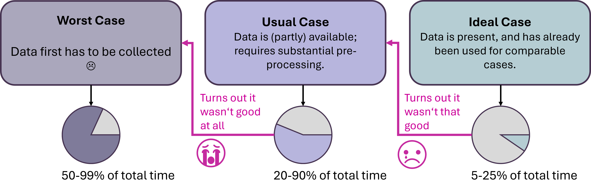
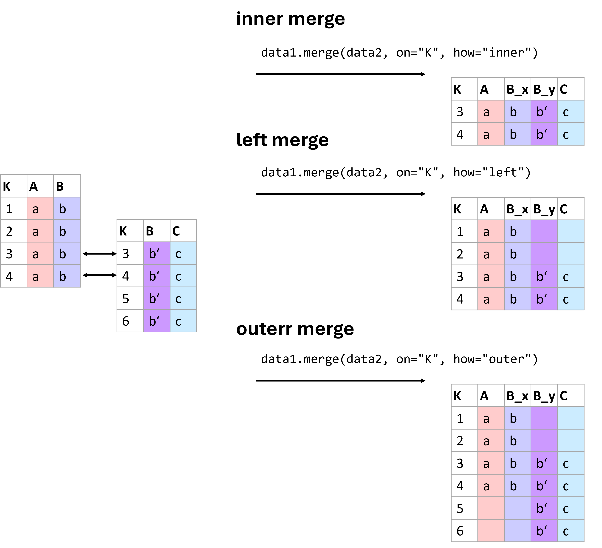

Data Cleaning and Preprocessing#
What is Data Preprocessing?#
We have now arrived at what we call Scrub Data in the ASEMIC data science workflow. More formally, this is usually termed Data Preprocessing and is a crucial step in every data science project. Data preprocessing refers to the steps we take to turn collected data into a form that is suitable for analysis. This includes identifying problems in the data, correcting or documenting them where possible, and transforming the dataset into a format that fits the task at hand. In practice, preprocessing often involves handling missing values, combining datasets, correcting inconsistent formats, adjusting data types, removing duplicates, and sometimes transforming variables for later analysis.
Data preprocessing is necessary because real-world data is nearly always incomplete, inconsistent, and/or lacking in certain behaviors or trends. Data might also be contaminated by errors or outliers that could skew the results of any analysis.
Why is it Important?#
As already mentioned in Data Acquisition – Where Do We Get Our Data?, one of the most common sayings in data science and machine learning is:
Garbage in, garbage out!
This phrase underscores a crucial truth about data science: the quality of the output depends heavily on the quality of the input. Despite the huge range of sophisticated tools available today, there is still a common misconception that clever methods can somehow compensate for poor data. They usually cannot. Machine learning models and other analytical tools can detect patterns and make predictions, but they are not miracle machines (don’t trust people who tell you otherwise). If the data is misleading, incomplete, inconsistent, or poorly matched to the task, then the results will often be misleading as well.
Data preprocessing is often perceived as a less “shiny” part of the data science process, especially in comparison to steps such as data visualization or training a machine-learning model. It is not uncommon, though, that the data acquisition and data preparation phase is what ultimately determines if a project will be a huge success or a complete failure! And, time for an important spoiler: if you are going to work in the field of data science you might be surprised to find out that getting, understanding, and preparing the data you need for an analysis or the training of a model might cost you much more time, sweat and tears than the shiny parts that people will see in your final results (as sketched in Fig. 12).

Fig. 12 Real life can be hard in data science. Getting the data is often the most overlooked part of a project and can easily turn out to be the most time-consuming part. You might be lucky at times. But every experienced data scientist can usually recount many anecdotes of starting a project where “fantastic” data was supposed to be readily available… only to find out later that this data was either required substantial amounts of additional work. Or, in the most unlucky cases, where the data turned out to be unsuitable for the given task, which might then be the early end of a project or the starting point of an entirely new project path that first involves truly getting the data. And, careful!, the percentages shown in the plot to illustrate the fraction of the total project time needed for data acquisition and processing are not directly based on actual data but are my own subjective estimates. Actual reported numbers, however, are on the order of magnitude, usually with an average reported time between 40% and 80% [Anaconda, Inc., 2022, CrowdFlower, Inc., 2016].#
Steps in Data Pre-Processing#
Common preprocessing tasks include handling missing values, combining data from different sources, correcting inconsistent entries, converting data types, standardizing formats, removing duplicates, transforming variables, and sometimes reducing the complexity of the dataset. Which of these steps matter most depends on the data and on the analysis we want to perform.
In sum, these steps allow transforming “raw data” [1] into a refined format that enhances the analytical capabilities of data science tools, leading to more accurate and insightful outcomes. In the following part, a few of the most common issues will briefly be introduced: dealing with missing values, combining datasets, or converting data types.
Dealing with Missing Values#
Understanding Missing Values#
Missing data is a prevalent issue in most data-gathering processes. It can occur for a variety of reasons, including errors in data entry, failures in data collection processes, or during data transmission. The presence of missing values can significantly impact the performance of data analysis models, as most algorithms are designed to handle complete datasets.
Handling missing data is therefore a crucial step; if not addressed properly, it can lead to biased or invalid results. Different strategies can be employed depending on the nature of the data and the intended analysis.
Techniques to Handle Missing Values#
Missing values are not all the same. Sometimes a value is missing completely by accident. Sometimes it is systematically missing, for example because a subgroup is less likely to answer a question. And sometimes a missing entry itself carries information. These differences matter, because they influence whether deletion or imputation is a sensible strategy.
1. Deletion#
Listwise Deletion: This involves removing any data entries that contain a missing value. While straightforward, this method can lead to a significant reduction in data size, which might not be ideal for statistical analysis.
Pairwise Deletion: Used primarily in statistical analyses, this method only excludes missing data in calculations where it is relevant. This allows for the use of all available data, although it can complicate the analysis process.
2. Imputation#
Imputation means that we try to make good guesses of what the missing data could have been. This is often much more complex than a simple deletion step. First and foremost, we would therefore ask if imputation is really necessary because we cannot afford to “lose” any more data. Whether or not we can then, at least partly, rescue our data by imputation depends on how well we understand the data and how sensitive the following data science tasks are. Suppose we, or the experts we collaborate with, do not have a solid understanding of the data, its meaning, its measurement process, etc. In that case, we should not include imputation because it comes with a high risk of introducing artifacts that we might not even be aware of.
The same is true if the following analysis is very sensitive and thus requires properly measured values.
In other cases, however, imputation can indeed improve later results because it might allow us to work with a larger part of the available data. Common imputation types are:
Mean/Median/Mode Imputation: This is one of the simplest methods, where missing values are replaced with the mean, median, or mode of the respective column. It’s quick and easy, but it can introduce bias if the data is not normally distributed.
Predictive Models: More sophisticated methods involve using statistical models, such as regression, to estimate missing values based on other data points within the dataset.
K-Nearest Neighbors (KNN): This method imputes values based on the similarity of instances that are nearest to each other. It is more computationally intensive but can provide better results for complex datasets.
In general, I would strongly advise to consider imputations as a last resort, or something for training or prototyping purposes. Because in terms of knowledge generation (see Data - Information - Knowledge), imputed values are not observed data but estimated values, or if you want to put it more drastically, imputations are essentially fake data!
Python Examples: Handling Missing Values#
We will include detailed Python examples demonstrating these techniques, showing practical implementations using key data science libraries such as Pandas [pandas development team, 2020] or scikit-learn [Pedregosa et al., 2011]. This hands-on approach will help in solidifying the theoretical concepts discussed and provide learners with the tools they need to effectively handle missing data in their projects.
import pandas as pd
import numpy as np
# Create dummy data
data = {
'Name': ["Alice", "Bob", "", "Diane"],
'Age': [25, np.nan, 30, 28],
'Salary': [50000, None, 60000, 52000]
}
df = pd.DataFrame(data)
print("Original DataFrame:")
df.head()
Original DataFrame:
| Name | Age | Salary | |
|---|---|---|---|
| 0 | Alice | 25.0 | 50000.0 |
| 1 | Bob | NaN | NaN |
| 2 | 30.0 | 60000.0 | |
| 3 | Diane | 28.0 | 52000.0 |
We have several missing values in our data.
A problem that we commonly face during data processing is that missing values can mean different things. In the technical sense, this simply means that there is no value at all. This is represented by NaN (= Not a Number) entries, such as np.nan in Numpy. But there are many different ways to represent missing data, which can easily lead to a lot of confusion. Pandas, for instance, also has options such as NA (see Pandas documentation on missing values). None is also commonly used to represent a non-existing or non-available entry.
The most problematic entry representing missing data is custom codes. Some devices, for instance, add values such as 9999 if a measurement is not possible. Or look at the table above in the code example, where an obviously missing name is represented by an empty string (""). In a similar fashion, you will get data with values such as "N/A", "NA", "None", "unknown", "missing", and countless others.
For a human reader, that might not seem too difficult at first. However, datasets will often be huge, and we don’t want to (or simply cannot) inspect all those options manually. In practice, this can make it surprisingly difficult to spot all missing values.
df.info()
<class 'pandas.DataFrame'>
RangeIndex: 4 entries, 0 to 3
Data columns (total 3 columns):
# Column Non-Null Count Dtype
--- ------ -------------- -----
0 Name 4 non-null str
1 Age 3 non-null float64
2 Salary 3 non-null float64
dtypes: float64(2), str(1)
memory usage: 228.0 bytes
The .info() method is a very easy and quick way to check for missing entries. But it won’t work for string-entries of any type, so that it here misses the empty entry in the “Name” column! For Pandas, this column has 4 entries and all are “non-null” which means “not missing”. Simply because there is a value in every row, even if one of them is a probably undesired "".
Remove missing values#
# Removing any rows that have at least one missing value
clean_df = df.dropna()
print("DataFrame after dropna():")
clean_df.head()
DataFrame after dropna():
| Name | Age | Salary | |
|---|---|---|---|
| 0 | Alice | 25.0 | 50000.0 |
| 2 | 30.0 | 60000.0 | |
| 3 | Diane | 28.0 | 52000.0 |
Very often, just like in this case, we have to find our own work-arounds for the data we get. Here, we could use a simple mask to remove names that we found to be represented by certain strings.
[x not in ["", "unknown", "missing", "None"] for x in df.Name]
[True, True, False, True]
mask = [x not in ["", "unknown", "missing", "None"] for x in df.Name]
df[mask]
| Name | Age | Salary | |
|---|---|---|---|
| 0 | Alice | 25.0 | 50000.0 |
| 1 | Bob | NaN | NaN |
| 3 | Diane | 28.0 | 52000.0 |
A cleaner way is usually to standardize custom missing codes, for instance like this:
df["Name"] = df["Name"].replace(["", "unknown", "missing", "None"], np.nan)
df
| Name | Age | Salary | |
|---|---|---|---|
| 0 | Alice | 25.0 | 50000.0 |
| 1 | Bob | NaN | NaN |
| 2 | NaN | 30.0 | 60000.0 |
| 3 | Diane | 28.0 | 52000.0 |
# Removing any rows that have at least one missing value
clean_df = df.dropna()
print("DataFrame after deletions:")
clean_df.head()
DataFrame after deletions:
| Name | Age | Salary | |
|---|---|---|---|
| 0 | Alice | 25.0 | 50000.0 |
| 3 | Diane | 28.0 | 52000.0 |
This seems rather clean and simple. In practice, however, we often do not want to remove any row with one or more missing value because it would remove far too much of our available data.
Imputation#
Let’s now see how we can impute missing values. But again, as explained above, imputation means that we alter, or rather fake data. So, obviously, we should be extremely careful in how and when we do this in practice!
And be careful not to overinterpret the following example. Here, the relationship between age and salary was artificially built into the simulated data, so imputing salary from age is easier than it would often be in real life.
import random
from faker import Faker # a small Python library to create dummy data
fake = Faker(seed=123)
def create_salary(age):
"""Just making things up here..."""
random_base = 1000 * random.randint(10, 50)
non_random_part = 1000 * age
return random_base + non_random_part
# Now let's create some fake data:
num_data = 100
names = [fake.first_name() for _ in range(num_data)]
ages = [random.randint(20, 62) for _ in range(num_data)]
salaries = [create_salary(age) for age in ages]
data = pd.DataFrame({
"Name": names,
"Age": ages,
"Salary": salaries,
})
data.head()
| Name | Age | Salary | |
|---|---|---|---|
| 0 | Chelsea | 27 | 51000 |
| 1 | Craig | 58 | 103000 |
| 2 | Walter | 27 | 64000 |
| 3 | Jeanette | 37 | 51000 |
| 4 | Margaret | 62 | 102000 |
Let us now remove some data to see what we could do to later fix this.
data.iloc[1:4, 2] = np.nan
data.head()
| Name | Age | Salary | |
|---|---|---|---|
| 0 | Chelsea | 27 | 51000.0 |
| 1 | Craig | 58 | NaN |
| 2 | Walter | 27 | NaN |
| 3 | Jeanette | 37 | NaN |
| 4 | Margaret | 62 | 102000.0 |
Often people will simply fill missing entries with a global value such as the mean or median.
median_salary = np.median(data.dropna().Salary)
median_salary
np.float64(71000.0)
data_imputed = data.fillna(median_salary)
data_imputed.head()
| Name | Age | Salary | |
|---|---|---|---|
| 0 | Chelsea | 27 | 51000.0 |
| 1 | Craig | 58 | 71000.0 |
| 2 | Walter | 27 | 71000.0 |
| 3 | Jeanette | 37 | 71000.0 |
| 4 | Margaret | 62 | 102000.0 |
If this is now “only” 3 entries out of 100 and we are not primarily interested in the Salary for further analysis it could be OK to do something like this. Still, always remember that we just invented new values, so this data should not be kept or shared without making this clear.
Technically often a bit better than simple mean or median substitutions are imputations based on existing data, for instance using the kNN-imputer from Scikit-Learn. We will later, in the machine-learning part see in depth how such a model works. Here we will skip the details and just say that it will replace missing values by what is found in the k most similar existing entries.
from sklearn.impute import KNNImputer
# Creating the imputer object
imputer = KNNImputer(n_neighbors=2)
# Copy all data
data_imputed = data.copy()
# Replace the columns used for imputation (the imputor object will only change missing values and leave existing ones unchanged!)
data_imputed[['Age', 'Salary']] = imputer.fit_transform(data[['Age', 'Salary']])
print("DataFrame after KNN Imputation:")
data_imputed.head()
DataFrame after KNN Imputation:
| Name | Age | Salary | |
|---|---|---|---|
| 0 | Chelsea | 27.0 | 51000.0 |
| 1 | Craig | 58.0 | 70000.0 |
| 2 | Walter | 27.0 | 56000.0 |
| 3 | Jeanette | 37.0 | 56500.0 |
| 4 | Margaret | 62.0 | 102000.0 |
If you now go back to our original data you will see that those guesses are still off, but better than just taking the global median value.
Combining Datasets#
Why Combine Datasets?#
In many real-world data science scenarios, data doesn’t come in a single, comprehensive package. Instead, relevant information is often scattered across multiple datasets. Combining these datasets is a crucial step as it enables a holistic analysis, providing a more complete view of the data subjects. Whether it’s merging customer information from different branches of a company, integrating sales data from various regions, or linking patient data from multiple clinical studies, effectively combining datasets can yield insights that aren’t observable in isolated data.
At first, this may seem like a rather simple operation. In practice, however, this is often surprisingly complicated and critical. If merging is not done correctly, we might either lose data or create incorrect entries.

Fig. 13 There are different ways of merging data. Which one to use is best decided based on the data we have at hand and the types of operations we plan to run with the resulting data. Here are three of the most common types of merges: inner, left, and outer merges.#
Fig. 13 shows common merging types. More information on different ways to combine data using pandas can be found in the pandas documentation on merging.
Here, only briefly: The basic syntax of the merge function is:
pd.merge(left_data, right_data, how='inner', on=None, left_on=None, right_on=None)
With the following key parameters:
how: The type of merge to be performed. The options include:‘inner’: Returns rows with matching keys in both DataFrames.
‘left’: Returns all rows from the left DataFrame, along with matching rows from the right DataFrame.
‘right’: Returns all rows from the right DataFrame, along with matching rows from the left DataFrame.
‘outer’: Returns all rows from both DataFrames. Missing values will be filled with NaN.
on: Column or list of columns to join on. The column(s) must be present in both DataFrames.left_onandright_on: These are used when the keys to merge on have different names in the left and right DataFrames.
Understanding Different Types of Merges#
Combining datasets effectively requires understanding the nature of the relationships between them. This understanding guides the choice of merging technique, each of which can affect the outcome of the analysis differently.
Inner Join#
Description: The inner join returns only those records that have matching values in both datasets. This method is most useful when you need to combine records that have a direct correspondence in both sources.
Use Case: Analyzing data where only complete records from both datasets are necessary, such as matching customer demographics with their purchasing records.
Outer Join#
There are different types of outer joins: - Full Outer Join: Combines all records from both datasets, filling in missing values with NaNs where no match is found. - Left Outer Join: Includes all records from the left dataset and the matched records from the right dataset. - Right Outer Join: Includes all records from the right dataset and the matched records from the left dataset.
Use Case: Useful when you want to retain all information from one or both datasets, filling gaps with missing values for further analysis.
To illustrate these concepts, let’s see practical examples.
# Create sample data for products
data_products = pd.DataFrame({
'ProductID': [101, 102, 103, 104],
'ProductName': ['Widget', 'Gadget', 'DoesWhat', 'DoSomething']
})
# Create sample data for sales
data_sales = pd.DataFrame({
'ProductID': [101, 102, 104, 105],
'UnitsSold': [134, 243, 76, 100]
})
data_products.head()
| ProductID | ProductName | |
|---|---|---|
| 0 | 101 | Widget |
| 1 | 102 | Gadget |
| 2 | 103 | DoesWhat |
| 3 | 104 | DoSomething |
data_sales.head()
| ProductID | UnitsSold | |
|---|---|---|
| 0 | 101 | 134 |
| 1 | 102 | 243 |
| 2 | 104 | 76 |
| 3 | 105 | 100 |
Inner Join Example:
inner_join_df = pd.merge(data_products, data_sales, on='ProductID', how='inner')
print("Inner Join Result:")
inner_join_df.head()
Inner Join Result:
| ProductID | ProductName | UnitsSold | |
|---|---|---|---|
| 0 | 101 | Widget | 134 |
| 1 | 102 | Gadget | 243 |
| 2 | 104 | DoSomething | 76 |
Left outer join and full outer join examples:
left_outer_join_df = pd.merge(data_products, data_sales, on='ProductID', how='left')
print("Left Outer Join Result:")
left_outer_join_df.head()
Left Outer Join Result:
| ProductID | ProductName | UnitsSold | |
|---|---|---|---|
| 0 | 101 | Widget | 134.0 |
| 1 | 102 | Gadget | 243.0 |
| 2 | 103 | DoesWhat | NaN |
| 3 | 104 | DoSomething | 76.0 |
full_outer_join_df = pd.merge(data_products, data_sales, on='ProductID', how='outer')
print("Full Outer Join Result:")
full_outer_join_df.head()
Full Outer Join Result:
| ProductID | ProductName | UnitsSold | |
|---|---|---|---|
| 0 | 101 | Widget | 134.0 |
| 1 | 102 | Gadget | 243.0 |
| 2 | 103 | DoesWhat | NaN |
| 3 | 104 | DoSomething | 76.0 |
| 4 | 105 | NaN | 100.0 |
Typical Challenges:#
The given example is fairly simple. In practice, you will often face far more complex situations that often require specific work-arounds. Some very common challenges for merging data are:
Duplicates: Data can have repeated or conflicting entries.
Inconsistent Nomenclature: Consistency in naming conventions can save hours of data wrangling later on. A classic example being different formats of names. “First Name Last Name” versus “Last Name, First Name”.
Before merging datasets, it is often worth asking whether the join key is actually unique and trustworthy. A merge based on a flawed identifier can silently create incorrect rows. It is therefore often a good strategy to work with a good identifier system where every datapoint is linked to one specific, unique ID. This can be a number, a hash, a specific code, a filename etc.
Other Common Preprocessing Tasks#
Handling missing values and combining datasets are two of the most common preprocessing challenges, but they are far from the only ones. In practice, data preprocessing also involves a range of smaller but still very important steps that help make the dataset more consistent, interpretable, and usable for later analysis.
One frequent issue concerns data types. When data is imported from spreadsheets, text files, or external databases, values often do not end up in the format we actually need. Numbers may be stored as strings, dates may appear as plain text, and categories may be represented in inconsistent ways. This can easily lead to errors or strange results later on. A column containing values like "12.5" may look numerical to us, but for Python or pandas it is still just text until we explicitly convert it.
Closely related to this is the question of formatting. Even if values refer to the same kind of information, they may be written in very different ways. Dates might appear as 2024-01-15, 15/01/2024, or Jan 15, 2024. Decimal numbers may use either dots or commas, depending on regional conventions. Text entries may contain extra spaces, inconsistent capitalization, or small spelling differences. All of this may look harmless at first, but it can cause major problems when filtering, sorting, grouping, merging, or analyzing the data.
Another common preprocessing task is the standardization of text entries. Names, labels, and categories are often written inconsistently. A dataset may contain entries such as "alice", " Alice ", and "ALICE" even though all of them refer to the same person. Similar issues arise with country names, product categories, or free-text answers. In such cases, simple string operations such as trimming spaces, converting to lower or upper case, or applying a consistent naming scheme can already make the data much easier to work with.
It is also often necessary to look for duplicate entries. Exact duplicates can arise when records are accidentally entered twice or when datasets are merged incorrectly. These duplicates may distort summaries and statistical analyses. In practice, however, duplicate detection is not always straightforward. Sometimes two rows refer to the same real-world object or person but are not written in exactly the same way. Detecting such near-duplicates can be much more difficult and may require additional identifiers or manual checks.
A further issue is unit consistency. Measurements may be recorded in different units without this being immediately obvious. One file may store height in centimeters, another in meters. One dataset may report temperatures in Celsius, another in Fahrenheit. If such inconsistencies are not detected early, they can completely distort the analysis.
Finally, there are also mathematical transformations of variables. Sometimes values need to be rescaled or transformed before they are used in later methods. For example, it may be helpful to standardize variables so that they have a mean of 0 and a standard deviation of 1, or to transform strongly skewed data using a logarithm. These steps are especially important for some machine-learning methods, clustering approaches, and dimensionality-reduction techniques. Since their importance depends strongly on the later analysis, we will return to them in more detail in later chapters.
Overall, these preprocessing steps may seem small when considered one by one. But together, they often make the difference between a dataset that merely exists and one that can actually be analyzed in a meaningful and reliable way.
Converting Data Types in Pandas#
Pandas provides several useful tools for converting data into more appropriate types. This is often necessary when data is imported from external files.
# Sample data with incorrect data types
data = pd.DataFrame({
'ProductID': ['001', '002', '003'],
'Price': ['12.5', '15.0', '20,25'],
'Date': ['2026-01-01', '2026-01-02', '2026-01-03']
})
# Convert 'ProductID' to integer
data['ProductID'] = data['ProductID'].astype(int)
# Convert 'Price' to float
data['Price'] = data['Price'].str.replace(',', '.').astype(float)
print("Data after conversion:")
print(data)
Data after conversion:
ProductID Price Date
0 1 12.50 2026-01-01
1 2 15.00 2026-01-02
2 3 20.25 2026-01-03
Formatting dates and strings#
Proper formatting also includes converting dates into a consistent datetime format and standardizing text entries.
# Convert 'Date' to datetime format
data['Date'] = pd.to_datetime(data['Date'], format='%Y-%m-%d')
print("Data after formatting Date:")
data.head()
Data after formatting Date:
| ProductID | Price | Date | |
|---|---|---|---|
| 0 | 1 | 12.50 | 2026-01-01 |
| 1 | 2 | 15.00 | 2026-01-02 |
| 2 | 3 | 20.25 | 2026-01-03 |
Example: Handling Decimal Delimiters#
This example demonstrates how to handle a common issue where decimal delimiters vary between commas and dots, which can lead to misinterpretation of numerical values.
# Sample data with decimal confusion
sales_data = pd.DataFrame({
'Region': ['US', 'EU', 'IN'],
'Sales': ['10,000.50', '8.000,75', '1,000.00']
})
# Correcting decimal delimiters based on region
sales_data['Sales'] = sales_data.apply(
lambda row: row['Sales'].replace('.', '').replace(',', '.') if row['Region'] == 'EU' else row['Sales'].replace(',', ''),
axis=1
).astype(float)
print("Corrected Sales Data:")
sales_data.head()
Corrected Sales Data:
| Region | Sales | |
|---|---|---|
| 0 | US | 10000.50 |
| 1 | EU | 8000.75 |
| 2 | IN | 1000.00 |
String Manipulation#
Handling strings effectively can also play a crucial part in cleaning data, such as trimming extra spaces, correcting typos, and standardizing text formats. String handling in Pandas mostly works just as in regular Python. By using .str we can access columns in a dataframe and apply specific string methods such as .strip() or .split().
# Sample data with string inconsistencies
customer_data = pd.DataFrame({
'CustomerName': [' Alice ', 'bob', 'CHARLES']
})
# Standardizing string format: trim, lower case, capitalize
customer_data['CustomerName'] = customer_data['CustomerName'].str.strip().str.lower().str.capitalize()
print("Standardized Customer Names:")
customer_data.head()
Standardized Customer Names:
| CustomerName | |
|---|---|
| 0 | Alice |
| 1 | Bob |
| 2 | Charles |
Further Cleaning Steps#
Removing Duplicates#
Duplicate entries in a dataset can skew analysis and lead to incorrect conclusions. It’s often important to identify and remove duplicates to ensure data integrity.
# Sample data with duplicate entries
data = pd.DataFrame({
'CustomerID': [1, 2, 2, 3, 4, 4, 4],
'Name': ['Alice', 'Bob', 'Bob', 'Charlie', 'Dave', 'Dave', 'Dave'],
'PurchaseAmount': [250, 150, 150, 300, 400, 400, 400]
})
print("Original Data:")
data.head()
Original Data:
| CustomerID | Name | PurchaseAmount | |
|---|---|---|---|
| 0 | 1 | Alice | 250 |
| 1 | 2 | Bob | 150 |
| 2 | 2 | Bob | 150 |
| 3 | 3 | Charlie | 300 |
| 4 | 4 | Dave | 400 |
# Removing duplicates
data_unique = data.drop_duplicates()
print("Data after Removing Duplicates:")
data_unique.head()
Data after Removing Duplicates:
| CustomerID | Name | PurchaseAmount | |
|---|---|---|---|
| 0 | 1 | Alice | 250 |
| 1 | 2 | Bob | 150 |
| 3 | 3 | Charlie | 300 |
| 4 | 4 | Dave | 400 |
In practice, duplicates are not always exact copies. Sometimes two rows refer to the same real-world entity but differ slightly in spelling, formatting, or timestamp. Detecting such “near duplicates” is much harder.
Standardizing Data#
Data standardization involves rescaling the values to a standard, such as having a mean of zero and a standard deviation of one (z-score standardization), or scaling data to a fixed range like 0 to 1 (normalization). This is crucial for many algorithms, including many algorithms in dimensionality reduction, clustering or many machine learning. We will therefore skip this for now, and address this question in later chapters where this processing step becomes crucial (see, for instance, Clustering).
Conclusions#
Data preprocessing is one of the least glamorous parts of data science, but also one of the most important. Real datasets are messy. Values are missing, formats are inconsistent, identifiers are unreliable, and useful information is often spread across several files or tables. Preparing data well takes time, care, and a good understanding of the task.
In practice, preprocessing is rarely just a technical cleanup step. It is also a stage of learning: by cleaning, checking, merging, and transforming data, we often begin to understand what the data really contains, where its weaknesses lie, and what kinds of analyses are actually possible.
From my own experience, it is not unusual that a very large part of a data science project is spent on getting, understanding, and preparing the data. It may not be the shiny part, but it is often the part that makes the shiny part possible.